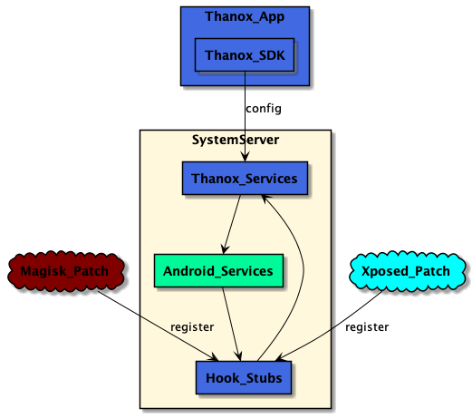
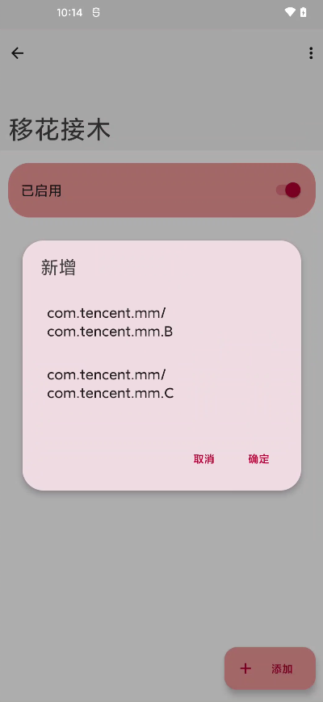

Thanox 上手三天：终于有人把 Android 的自启动乱象治住了
装 Thanox 之前我以为所有自启管理器都是一个德行——杀了又活。上手三天发现它根本不是同一层级的东西，系统级 Framework 层跑在 system_server 里，普通 app 层面那些管理器连它的天花板都够不着。
为什么我会去装 Thanox
事情的起因很简单：那段时间我的手机后台乱得离谱。微信在后台偷偷拉起 QQ，QQ 又唤起腾讯视频，运动健康动不动自己冒出来要保活，连银行 app 锁屏了都在偷偷跑 JobScheduler。系统自带的安全管家也不是没试过——它确实能杀进程，但杀完三分钟，ROM 就自动给白名单里的 app 重新放行，跟没管一样。
搜了一圈才发现，普通自启管理器从架构上就有天花板：它们自己也只是一个 app。Android 沙箱机制决定了 app 管不了另一个 app 的系统级行为，ROM 厂商的白名单、系统服务的后台保活、app 间的隐式广播互拉，这些对普通管理器来说全是黑盒。
Thanox 不一样。我去它的官网查了一下，这家伙的核心逻辑根本不跑在 app 层——它通过 Xposed hook 或 Magisk 补丁注入到了 system_server 进程里。那是 Android 系统的核心进程，拥有 system 级别的权限。App 层只是个普通的 UI 壳，负责配置开关和写规则；Framework 层才是真正干活的，拦截后台启动、监听 Activity 生命周期、给敏感调用返回虚拟数据，全在系统底层直接执行。

说实话，看到这个架构图的时候我有点被镇住。原来之前用了那么久的自启管理器，全是在 app 层面跟系统玩猫鼠游戏，而 Thanox 直接坐到了牌桌上。
初印象：激活是个小坎，但界面挺干净
先去官方下载拿安装包，Thanox 不是那种装完点开就能用的"一键加速"工具。它需要先激活——要么有 LSPosed 框架，要么刷 Magisk 补丁。我用的是 LSPosed，模块管理器里勾选 Thanox 后重启，再打开 app 就能看到"Framework 已激活"的绿色提示了。这一步对没接触过 Xposed 的人来说可能是个门槛，但如果你已经在 root 圈子里混，基本就是常规操作。
激活之后的界面很克制。首页就是一列应用，每个右边一个开关——关了就不让它自启，开了就放行。右上角有个菜单入口，里面藏着规则引擎、情景模式、隐匿数据这些进阶功能。没有广告、没有弹窗、没有"立即清理"的大红按钮，就是一张干干净净的应用列表。这种克制反而让我觉得靠谱——真正有东西的工具不需要靠 UI 焦虑感来卖功能。
实际用下来，两个功能最让我惊喜
后台启动规则：原来还能这么精细
一开始我以为应用列表的开关就是全部了——要么全拦要么全放。结果 Thanox 还有一套规则语法，比开关精细得多。规则的基本结构是"行动 + 调用方 + 目标应用"，行动要么是 ALLOW 要么是 DENY，调用方和目标应用可以写具体包名，也可以用 * 通配，还支持 SHELL、ROOT、android 这些角色代号。
举个例子，我不想让微信被除了 QQ 以外的任何 app 拉起，就写两条：
ALLOW com.tencent.qq com.tencent.mm
DENY * com.tencent.mm规则优先级是 DENY 大于 ALLOW，所以顺序其实不重要，但 Thanox 建议 DENY 写在后面，阅读起来更顺。我实际跑了两天，把这条规则加上之后，微信再也没莫名其妙从后台冒出来过。之前是一天能收到三条不同 app 的互拉起通知，现在是一整天零记录。
还有一条规则我加了之后效果也很明显：ALLOW android *，允许 Android 系统自身启动所有应用。这条是为了防止我的电话、相机这些系统组件被其他规则误拦截。Thanox 不会自动帮你加这条，得自己动手，这点我觉得文档站的中文文档提得很及时——我差点忘了加，还好翻了一下Thanox文档。
移花接木：跳过开屏广告的骚操作
第二个让我拍大腿的功能是"移花接木"。这个功能的思路特别有想象力：在系统层拦截 Activity 跳转，把 A → B 偷偷改成 A → C。最直接的应用就是跳过开屏广告——app 启动先显示一个 SplashActivity（广告页），Thanox 可以直接把这个目标替换成主界面的 Activity，瞬间跳过。
我拿几个有开屏广告的 app 试了一下。先打开 Thanox 的"显示当前活动"浮窗，找到广告页的活动标识（格式是 包名/活动名，比如 com.example.app/.AdActivity），再找到主界面的活动名，然后在移花接木里加一条规则：AdActivity → MainActivity。之后再启动那个 app，广告页直接消失，秒进主界面。

说实话，这功能的实现思路比我预想的要"底层"得多。它不是在 app 上面盖一层遮罩，也不是模拟点击"跳过"按钮——它是在系统要创建 Activity 的那一刻就把目标换掉了。这种级别的拦截，普通 app 层面的工具根本做不到。
有一点不太完美
规则引擎虽然强大，但语法确实需要花点时间上手。Thanox 提供了规则模板和预设，但我第一次写的时候还是写错了包名——把 com.tencent.mm 写成了 com.tencent.wechat，结果规则一直没生效，调试了好一会儿才发现。如果能在 UI 里加个包名自动补全就好了，不过考虑到这是个免费工具，这种小细节也不是不能忍。
还有一点是 Play 商店版和国内版的区别。我一开始装的是国内版，后来想换 Play 版体验一下 Pro 功能，结果忘了先卸载国内版（两个版本包名不同），装完直接冲突。后来重启、卸载、重装、重新激活才搞定。Thanox 提供了备份/恢复配置的功能，但切换版本的时候还是需要重新导入，这点稍微有点折腾。
适合谁，不适合谁
Thanox 适合的人其实很明确：已经有 root 环境、对 Android 系统有一定了解、被后台乱象烦透了的用户。如果你还在给手机装各种"手机管家""极速清理"，那 Thanox 可能太硬核了——你需要先搞定 LSPosed 或 Magisk，需要理解什么是 Activity、什么是 system_server，需要自己动手写规则。
反过来，如果你就是想装完就能"一键解决所有问题"，Thanox 不是你的菜。它没有一键按钮，你得花点时间配置规则、调整情景模式、验证移花接木的效果。但只要你愿意花这半小时，它给你的回报是真的把那些流氓自启动压得死死的——我后台的应用数量从每天起床时的二十多个降到了五六个，电池耐用度提升了不少。
对了，Thanox 不是只有我一个人在做这事儿。它的 Framework 层 Xposed hook 逻辑本身就是开源的，GitHub、Gitee、GitCode三个仓库都有完整源码和文档目录，不管你是想自己编译还是单纯想看看它到底怎么实现 system_server 注入的，都能拿到完整资料。
我本来以为又一个"自启管理器"的名字而已，没想到挖到个系统级的好东西。